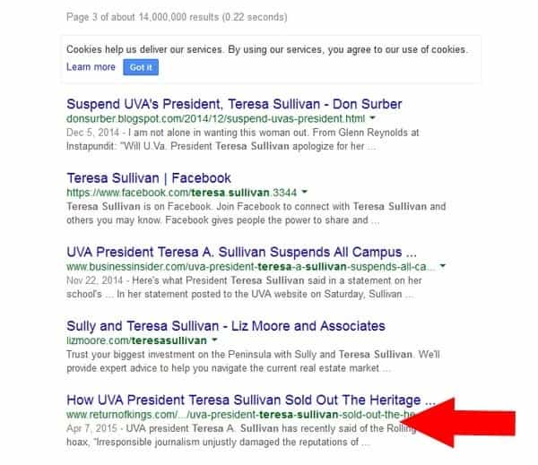
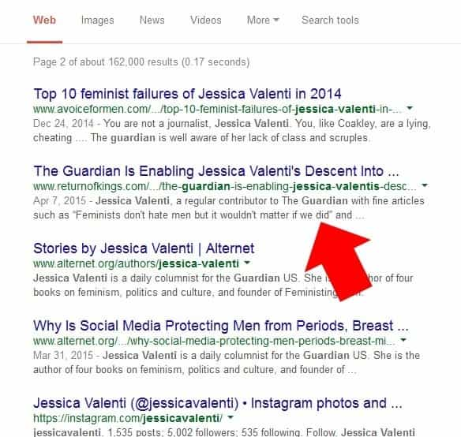
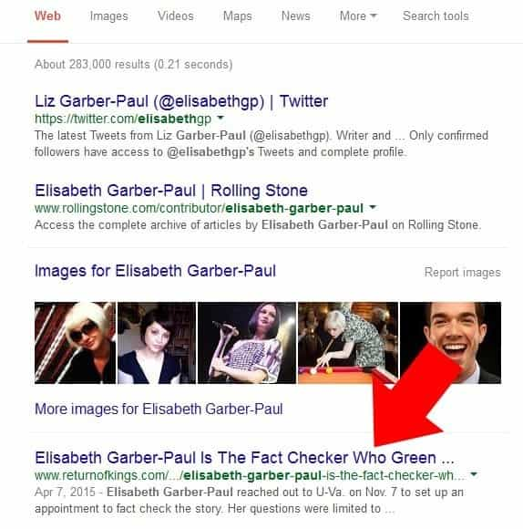
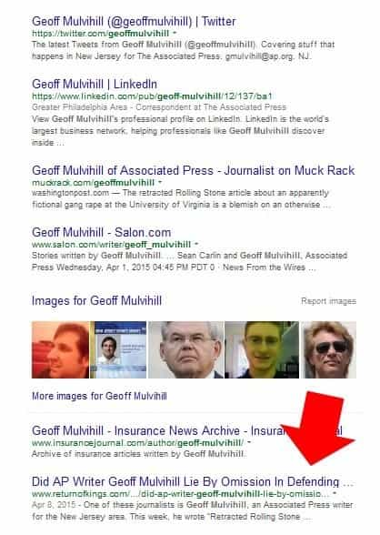
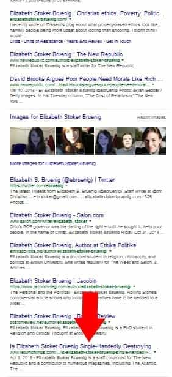
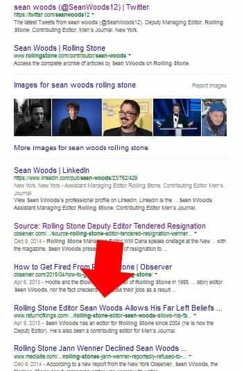

Daryush "Roosh" Valizadeh created ROK in October 2012. You can visit his blog at RooshV.com or follow him on Twitter and Facebook.


When Columbia University issued a report recently confirming that Rolling Stone magazine published a completely false gang rape event at the University Of Virginia, I breathed a sigh of relief that accountability would finally take place and those involved with the story would be punished. That never happened. While there were a few stern words from a handful of media outlets, everyone involved with the story got to keep their jobs. Instead of wallow in anger, I gathered the ROK staff together to publish a series of stories as part of Operation Rape Payment.
Operation Rape Payment was meant to serve a slap of punishment to those involved in pushing the rape hoax, as much pain as we could exert from our humble platform.
Here are the nine articles that we published:
We covered more individuals involved in the hoax than—as far as I’m aware—any mainstream media organization. In spite of our efforts, our reporting did not get picked up by any large source. Wouldn’t that indicate failure of our operation?
As I’ve written before, there are various ways to punish the media elite. One is to taint their pristine Google results by publicly broadcasting their lack of integrity and radical left agenda. If you measure our efforts based on page views alone, we can’t claim success, but let’s head to Google and see what comes up when searching for the names of those we wrote about. Our goal was to put the truth on the first page of their Google results.
Result number 25.

Result number 12.

A search for “Jessica Valenti” returns the article at position number 25.
Result number 4.

Result number 7.

Result number 10.

There are other famous “Sean Woods” so I added “Rolling Stone,” an addition that any future employer or Tinder match would also enter.
Result number 7.

Because of our efforts, four individuals who were instrumental in creating or white-washing the hoax now have to permanently account for their misdeeds to the public. While it’s very likely that that public does not at all care about the hoax that was sold to them as truth, our operation was the moral thing to do, no matter the impact it would serve.
In the long run, the operation may have been futile, because even if we were to completely destroy the career prospects of the above individuals, there would be hundreds more begging to take their place (and for lesser pay), but every night before I go to bed, along with other ROK writers and commenters, we must do so knowing that we did the best we could to help our family, our friends, our tribe, and our society. If we see fraud, we must yell fraud, even if it will fall on deaf ears, and even if there is a personal cost to us with no guarantee that we’ll succeed.
While trying to fight back against the tidal wave of Western immorality and degeneracy seems hopeless at times, we’re in this for the long run. Have patience, dear reader, for our victories can only grow in size.